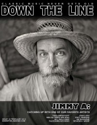

Down The Line, Feb 2012, #12
| Cover |
|---|
|  |
 Online Exclusively Online Exclusively |
| Writers in this Issue |
| Crosslin, Matt Etchison, Holly Ruff, Steve Van Pelt, Doug |
Jimmy Abegg
Cover Feature:- "Jimmy A: Down the Line Catches Up With One of Our Favorite Artists" by Steve Ruff
- "Josh Lory" by Steve RuffJosh Lory interviewed about Lifesavers Underground, The Bloody Strummers, Western Grace, Destroy Nate Allen, and a Mike Knott tribute album
- "Jason Dunn" by Steve RuffJason Dunn, Facedown Records
- "Vinyl Remains" by Steve RuffVinyl Remains, Kevin Burke interviewed
- "Come as a Child... Or Not at All" by Steve Ruff
- Bill Mallonee, Vigilantes of Love
- "A Letter from Doug Van Pelt" by Doug Van PeltHM, out of print, available online
- "There's a Sound... pt. 2" by Steve Ruff
- "The Violet Burning at the Balzer Theatre (11/1/11)" by Holly Etchison
- Leslie DuPre-Grimaud - Locust by Steve Ruff
- Low and Behold - Blood Red by Steve Ruff
- James and Evander - Constellating EP+2 by Steve Ruff
- Bill Mallonee - The Power and The Glory by Steve Ruff
- The Beckoning - Demystifying the Oracle by Steve Ruff
- Bill Mason Band - No Sham [Remastered] by Matt Crosslin
- Omar Domkus - Shades of a Shadow by Steve Ruff
- The Sea Worf Mutiny - The Last Season by Matt Crosslin
- The Bloody Strummers - Return of the Halycon Days by Steve Ruff
- Nate Houge - Reform Follows Function by Matt Crosslin
- Pospolite Ruszenie - Swiebodnosc by Steve Ruff
- Insomniac Folklore - A Place Where Runaways Are Not Alone by Steve Ruff
Relevant Links
For more information about Down The Line, or to subscribe, visit .This issue is available exclusively online.
© 2011 CMnexus. Last updated September 2019. Contact: editor -AT- cmnexus -DØT- org About